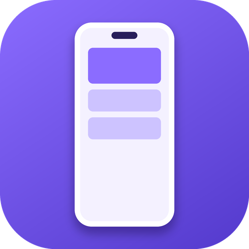

SimOs: the mobile simulator for your Windows PC
Open your web or hybrid app on a simulated phone, tablet and desktop at the exact sizes the app stores ask for, and take your listing screenshots and videos without leaving your PC.
Updated November 22, 2026
Download
- Microsoft Store: SimOs for Windows 10 and 11, with the Pro subscription inside the app.
- itch.io: the same app for Windows, free and with no ads, with the 7-day trial; Pro is only sold in the Microsoft Store copy.
Today SimOs is for 64-bit Windows 10 and 11.
What SimOs is
SimOs is a phone, tablet and desktop simulator for Windows 10 and 11. You open your project folder or a web address and see your app as it will look on each device, at the exact sizes the app stores ask for, and you use it with your mouse as if it were your finger. It is made for people shipping their first app and for teams who ship every week.
It works with websites, PWAs, React, Vite and Capacitor, Ionic or Cordova apps, and when you save a file the app reloads on its own. Native iPhone apps (Swift) cannot run on Windows: SimOs tells you why and shows you the alternatives. The built-in guide, in seven languages, helps you decide whether your app can be built with Capacitor or has to be native.
Your app, as on the real device
- 6.9″ phone (1320×2868), 13″ tablet (2064×2752) and desktop (2880×1800), in portrait and landscape, with light and dark mode and a clean 9:41 status bar.
- Two engines: the phone engine (WebKit), the same one that renders websites and Capacitor apps on iPhone and iPad, and the Chrome engine (Chromium). WebKit downloads the first time (176 MB).
- Your mouse is your finger: tap, swipe with momentum and scroll; your keyboard types into the app.
- The official Android emulator inside SimOs, with a live picture, touch, keyboard and buttons (the Android Studio emulator is required).
- If your project has its own dev server (npm run dev), SimOs shows you the command and only starts it if you say yes.
Screenshots and videos for your listing (Pro)
- Capture: the exact PNG the store asks for, saved to Pictures in a folder named after your app and the date.
- Record: a 15 to 30 second app preview at 30 fps, sized for the store (886×1920 on the phone, 1200×1600 on the tablet, 1920×1080 on the desktop).
- Check for free whether your video meets the App Store rules; with Pro, SimOs converts it with ffmpeg and adds the audio track the store requires.
- Screenshots and videos from the Android emulator and from your iPhone over USB as well.
Your real iPhone on your PC, no Mac needed
Plug in your iPhone and see it on your PC: control it with the mouse (iOS 27 or later), read its logs and download its crash reports, free. With Pro, screenshots fitted to 1320×2868 and video of the phone.
It uses two open-source tools by other authors, go-ios and pymobiledevice3, which SimOs installs only if you say yes, verifying every download. You need the USB driver that comes with iTunes or the Apple Devices app and, for mirroring and video, Python 3.12 to 3.15.
Build for mobile (Pro)
- iPhone without a Mac: build in the cloud with your own Codemagic account (500 free minutes a month), GitHub or Xcode Cloud (if you set it up once on a Mac), and SimOs uploads the app to TestFlight from your PC with your App Store Connect key. An Apple Developer account is required.
- Before it starts, SimOs warns you if a private GitHub repository would use paid minutes, and it never turns on billing for any service.
- Android on your PC: installs what is missing with your permission, builds and opens the app in the emulator or on your phone over USB.
- Free, no build needed: install a development app you already have on your iPhone over USB.
Free and Pro
- Free, no ads: opening your app, viewing it on every device, rotating it, testing it, using the Android emulator and viewing your iPhone over USB.
- SimOs Pro: Capture, Record, video preparation and Build. Your first 7 days are free on your PC, counted from the first time you use it, with nothing to pay; the trial is checked online and there is one per computer (reinstalling does not renew it).
- Price: an in-app subscription paid through the Microsoft Store, monthly or yearly: €1.99 a month or €14.99 a year in the euro area. The Store shows the price in your currency before you pay.
Your information
- Your code stays on your PC unless you choose to build in your own GitHub or Codemagic account.
- Your keys are stored in Windows Credential Manager.
- Usage statistics with no personal data, only if you allow them.
- Privacy policy: privacy.html. Help and support: support.html.
Requirements
- A 64-bit PC with Windows 10 or later. Internet to download the phone engine the first time (176 MB) and to check the trial.
- Android: the Android Studio emulator. iPhone over USB: the USB driver that comes with iTunes or the Apple Devices app.
- TestFlight: an Apple Developer account and an App Store Connect team key.
Frequently asked questions
What is SimOs?
A phone, tablet and desktop simulator for Windows 10 and 11: you open your web or hybrid app and see it on each device at the exact app store sizes, take the screenshots and videos for your listing and, with Pro, build it for mobile without a Mac.
Which apps can I open in SimOs?
Websites, PWAs and apps built with React, Vite, Capacitor, Ionic or Cordova, from the project folder or from a web address. Native iPhone apps (Swift) cannot run on Windows: SimOs tells you why and shows you the alternatives.
How do I take screenshots at the size the app stores ask for?
With the Capture button in SimOs Pro: it saves the exact store PNG (1320×2868 on the phone, 2064×2752 on the tablet, 2880×1800 on the desktop) to Pictures, in a folder named after your app and the date. Record makes the 15 to 30 second app preview video.
Can I see my iPhone on my PC without a Mac?
Yes. Over USB, you see and control your iPhone with the mouse (iOS 27 or later), read its logs and download its crash reports, free. Screenshots and videos of the real phone are part of Pro.
Can I build an iPhone app without owning a Mac?
With SimOs Pro, yes: build in the cloud with your Codemagic (500 free minutes a month), GitHub or Xcode Cloud account, and SimOs uploads the app to TestFlight from your PC. You need an Apple Developer account. SimOs never turns on billing for any service.
What is free and what is Pro?
Opening your app, viewing it on every device, rotating it, testing it, using the Android emulator and viewing your iPhone over USB are free, with no ads. SimOs Pro unlocks Capture, Record, video preparation and Build, and the first 7 days are free on your PC. It costs €1.99 a month or €14.99 a year in the euro area, paid through the Microsoft Store.
What data does SimOs keep?
Your code stays on your PC unless you choose to build in your own GitHub or Codemagic account. Your keys are stored in Windows Credential Manager, and usage statistics, with no personal data, are only sent if you allow them.
What does my PC need?
A 64-bit PC with Windows 10 or later and internet to download the phone engine the first time (176 MB) and to check the trial. For Android, the Android Studio emulator; to see your iPhone over USB, the USB driver that comes with iTunes or the Apple Devices app.
iPhone, iPad, iOS, App Store, TestFlight, Xcode and Android are trademarks of their owners; SimOs is not affiliated with them.